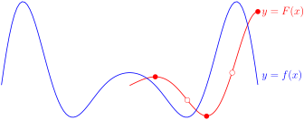

Section 6.3 The Fundamental Theorem of Calculus
Subsection 6.3.1 The Fundamental Theorem of Calculus
We have spent quite a few pages (and lectures) talking about definite integrals, what they are (Definition 6.1.9), when they exist (Theorem 6.1.10), how to compute some special cases (Section 6.1.5), some ways to manipulate them (Theorem 6.2.1 and 6.2.3) and how to bound them (Theorem 6.2.13). Conspicuously missing from all of this has been a discussion of how to compute them in general. It is high time we rectified that.
The single most important tool used to evaluate integrals is called “the fundamental theorem of calculus”. Its grand name is justified — it links the two branches of calculus by connecting derivatives to integrals. In so doing it also tells us how to compute integrals. Very roughly speaking the derivative of an integral is the original function. This fact allows us to compute integrals using antiderivatives 1 . Of course “very rough” is not enough — let's be precise.
Theorem 6.3.1. Fundamental Theorem of Calculus.
Let \(a \lt b\) and let \(f(x)\) be a function which is defined and continuous on \([a,b]\text{.}\)
-
Part 1. Let \(\ds F(x)=\int_a^x f(t)\dee{t}\) for any \(x \in[a,b]\text{.}\) Then the function \(F(x)\) is differentiable and further\begin{align*} F'(x) &=f(x) \end{align*}
-
Part 2. Let \(G(x)\) be any function which is defined and continuous on \([a,b]\text{.}\) Further let \(G(x)\) be differentiable with \(G'(x)=f(x)\) for all \(a \lt x \lt b\text{.}\) Then\begin{align*} \int_a^b f(x)\dee{x} &=G(b)-G(a) & \text{or equivalently} && \int_a^b G'(x)\dee{x} &=G(b)-G(a) \end{align*}
Before we prove this theorem and look at a bunch of examples of its application, it is important that we recall one definition from differential calculus — antiderivatives. If \(F'(x) = f(x)\) on some interval, then \(F(x)\) is called an antiderivative of \(f(x)\) on that interval. So Part 2 of the the fundamental theorem of calculus tells us how to evaluate the definite integral of \(f(x)\) in terms of any of its antiderivatives — if \(G(x)\) is any antiderivative of \(f(x)\) then
The form \(\int_a^b G'(x)\,\dee{x} = G(b) - G(a)\) of the fundamental theorem relates the rate of change of \(G(x)\) over the interval \(a\le x\le b\) to the net change of \(G\) between \(x=a\) and \(x=b\text{.}\) For that reason, it is sometimes called the “net change theorem”.
We'll start with a simple example. Then we'll see why the fundamental theorem is true and then we'll do many more, and more involved, examples.
Example 6.3.2. A first example.
Consider the integral \(\int_a^b x \dee{x}\) which we have explored previously in Example 6.2.6.
- The integrand is \(f(x)=x\text{.}\)
- We can readily verify that \(G(x) = \frac{x^2}{2}\) satisfies \(G'(x)=f(x)\) and so is an antiderivative of the integrand.
- Part 2 of Theorem 6.3.1 then tells us that\begin{align*} \int_a^b f(x) \dee{x} &= G(b)-G(a)\\ \int_a^b x \dee{x} &= \frac{b^2}{2} - \frac{a^2}{2} \end{align*}which is precisely the result we obtained (with more work) in Example 6.2.6.
We do not give completely rigorous proofs of the two parts of the theorem — that is not really needed for this course. We just give the main ideas of the proofs so that you can understand why the theorem is true.
Part 1.
We wish to show that if
- Assume that \(F\) is the above integral and then consider \(F'(x)\text{.}\) By definition\begin{align*} F'(x) &=\lim_{h\rightarrow 0} \frac{F(x+h)-F(x)}{h} \end{align*}
- To understand this limit, we interpret the terms \(F(x), F(x+h)\) as signed areas. To simplify this further, let's only consider the case that \(f\) is always nonnegative and that \(h \gt 0\text{.}\) These restrictions are not hard to remove, but the proof ideas are a bit cleaner if we keep them in place. Then we have\begin{align*} F(x+h)&=\text{the area of the region $\big\{\ (t,y)\ \big|\ a\le t\le x+h,\ 0\le y\le f(t)\ \big\}$}\\ F(x)&=\text{the area of the region $\big\{\ (t,y)\ \big|\ a\le t\le x, \phantom{+h\ \,}\ 0\le y\le f(t)\ \big\}$} \end{align*}
-
Then the numerator
\begin{gather*} F(x+h)-F(x)=\text{the area of $\big\{\ (t,y)\ \big|\ x\le t\le x+h,\ 0\le y\le f(t)\ \big\} $} \end{gather*}This is just the more darkly shaded region in the figure

- We will be taking the limit \(h\rightarrow 0\text{.}\) So suppose that \(h\) is very small. Then, as \(t\) runs from \(x\) to \(x=h\text{,}\) \(f(t)\) runs only over a very narrow range of values 2 , all close to \(f(x)\text{.}\)
- So the darkly shaded region is almost a rectangle of width \(h\) and height \(f(x)\) and so has an area which is very close to \(f(x)h\text{.}\) Thus \(\frac{F(x+h)-F(x)}{h}\) is very close to \(f(x)\text{.}\)
- In the limit \(h\rightarrow 0\text{,}\) \(\frac{F(x+h)-F(x)}{h}\) becomes exactly \(f(x)\text{,}\) which is precisely what we want.
We can make the above more rigorous using the Mean Value Theorem 3 .
Part 2.
We want to show that \(\int_a^b f(t)\dee{t}=G(b)-G(a)\text{.}\) To do this we exploit the fact that the derivative of a constant is zero.
- Let\begin{align*} H(x) &= \int_a^x f(t)\dee{t} -G(x)+G(a) \end{align*}Then the result we wish to prove is that \(H(b)=0\text{.}\) We will do this by showing that \(H(x)=0\) for all \(x\) between \(a\) and \(b\text{.}\)
- We first show that \(H(x)\) is constant by computing its derivative:\begin{align*} H'(x) &= \diff{}{x}\int_a^x f(t)\dee{t} - \diff{}{x}\left( G(x) \right)+ \diff{}{x}\left( G(a) \right)\\ \end{align*}Hence \(H\) is constant.
Since \(G(a)\) is a constant, its derivative is \(0\) and by assumption the derivative of \(G(x)\) is just \(f(x)\text{,}\) so
\begin{align*} &= \diff{}{x}\int_a^x f(t)\dee{t} - f(x)\\ \end{align*}Now Part 1 of the theorem tells us that this derivative is just \(f(x)\text{,}\) so
\begin{align*} &= f(x) - f(x) = 0 \end{align*} - To determine which constant we just compute \(H(a)\text{:}\)\begin{align*} H(a) &= \int_a^a f(t)\dee{t} - G(a)+G(a)\\ &= \int_a^a f(t)\dee{t} & \text{by Theorem }\knowl{./knowl/thm_Intdomain.html}{\text{6.2.3}}\text{(a)}\\ &=0 \end{align*}as required.
The simple example we did above (Example 6.3.2), demonstrates the application of part 2 of the fundamental theorem of calculus. Before we do more examples (and there will be many more over the coming sections) we should do some examples illustrating the use of part 1 of the fundamental theorem of calculus. Then we'll move on to part 2.
Example 6.3.3. \(\diff{}{x}\int_0^x t \dee{t}\).
Consider the integral \(\int_0^x t\,\dee{t}\text{.}\) We know how to evaluate this — it is just Example 6.3.2 with \(a = 0\text{,}\) \(b = x\text{.}\) So we have two ways to compute the derivative. We can evaluate the integral and then take the derivative, or we can apply Part 1 of the fundamental theorem. We'll do both, and check that the two answers are the same.
First, Example 6.3.2 gives
So of course \(F'(x) = x\text{.}\) Second, Part 1 of the fundamental theorem of calculus tells us that the derivative of \(F(x)\) is just the integrand. That is, Part 1 of the fundamental theorem of calculus also gives \(F'(x) = x\text{.}\)
In the previous example we were able to evaluate the integral explicitly, so we did not need the fundamental theorem to determine its derivative. Here is an example that really does require the use of the fundamental theorem.
Example 6.3.4. \(\diff{}{x}\int_0^x e^{-t^2}\dee{t}\).
We would like to find \(\diff{}{x}\int_0^x e^{-t^2}\dee{t}\text{.}\) In the previous example, we were able to compute the corresponding derivative in two ways — we could explicitly compute the integral and then differentiate the result, or we could apply part 1 of the fundamental theorem of calculus. In this example we do not know the integral explicitly. Indeed it is not possible to express 4 the integral \(\int_0^x e^{-t^2}\dee{t}\) as a finite combination of standard functions such as polynomials, exponentials, trigonometric functions and so on.
Despite this, we can find its derivative by just applying the first part of the fundamental theorem of calculus with \(f(t)=e^{-t^2}\) and \(a=0\text{.}\) That gives
Let us ratchet up the complexity of the previous example — we can make the limits of the integral more complicated functions. So consider the previous example with the upper limit \(x\) replaced by \(x^2\text{:}\)
Example 6.3.5. \(\diff{}{x}\int_0^{x^2} e^{-t^2}\dee{t}\).
Consider the integral \(\int_0^{x^2} e^{-t^2}\dee{t}\text{.}\) We would like to compute its derivative with respect to \(x\) using part 1 of the fundamental theorem of calculus.
The fundamental theorem tells us how to compute the derivative of functions of the form \(\int_a^x f(t)\dee{t}\) but the integral at hand is not of the specified form because the upper limit we have is \(x^2\text{,}\) rather than \(x\text{,}\) — so more care is required. Thankfully we can deal with this obstacle with only a little extra work. The trick is to define an auxiliary function by simply changing the upper limit to \(x\text{.}\) That is, define
Then the integral we want to work with is
\begin{align*} E(x^2) &= \int_0^{x^2} e^{-t^2}\dee{t} \end{align*}The derivative \(E'(x)\) can be found via part 1 of the fundamental theorem of calculus (as we did in Example 6.3.4) and is \(E'(x)= e^{-x^2}\text{.}\) We can then use this fact with the chain rule to compute the derivative we need:
What if both limits of integration are functions of \(x\text{?}\) We can still make this work, but we have to split the integral using Theorem 6.2.3.
Example 6.3.6. \(\diff{}{x}\int_x^{x^2} e^{-t^2}\dee{t}\).
Consider the integral
As was the case in the previous example, we have to do a little pre-processing before we can apply the fundamental theorem.
This time (by design), not only is the upper limit of integration \(x^2\) rather than \(x\text{,}\) but the lower limit of integration also depends on \(x\) — this is different from the integral \(\int_a^x f(t)\dee{t}\) in the fundamental theorem where the lower limit of integration is a constant.
Fortunately we can use the basic properties of integrals (Theorem 6.2.3(b) and (c)) to split \(\int_x^{x^2} e^{-t^2}\dee{t}\) into pieces whose derivatives we already know.
With this pre-processing, both integrals are of the right form. Using what we have learned in the the previous two examples,
Before we start to work with part 2 of the fundamental theorem, we need a little terminology and notation. First some terminology — you may have seen this definition in your differential calculus course.
Definition 6.3.7. Antiderivatives.
Let \(f(x)\) and \(F(x)\) be functions. If \(F'(x)=f(x)\) on an interval, then we say that \(F(x)\) is an antiderivative of \(f(x)\) on that interval.
As we saw above, an antiderivative of \(f(x)=x\) is \(F(x) = x^2/2\) — we can easily verify this by differentiation. Notice that \(x^2/2 + 3\) is also an antiderivative of \(x\text{,}\) as is \(x^2/2 + C\) for any constant \(C\text{.}\) This observation gives us the following simple lemma.
Lemma 6.3.8.
Let \(f(x)\) be a function and let \(F(x)\) be an antiderivative of \(f(x)\text{.}\) Then \(F(x)+C\) is also an antiderivative for any constant \(C\text{.}\) Further, every antiderivative of \(f(x)\) must be of this form.
Proof.
There are two parts to the lemma and we prove each in turn.
- Let \(F(x)\) be an antiderivative of \(f(x)\) and let \(C\) be some constant. Then\begin{align*} \diff{}{x}\left( F(x) + C \right) &= \diff{}{x}\left( F(x) \right) + \diff{}{x}\left( C \right)\\ &= f(x) + 0 \end{align*}since the derivative of a constant is zero, and by definition the derivative of \(F(x)\) is just \(f(x)\text{.}\) Thus \(F(x)+C\) is also an antiderivative of \(f(x)\text{.}\)
- Now let \(F(x)\) and \(G(x)\) both be antiderivatives of \(f(x)\) — we will show that \(G(x) = F(x)+C\) for some constant \(C\text{.}\) To do this let \(H(x) = G(x)-F(x)\text{.}\) Then\begin{align*} \diff{}{x}H(x) &= \diff{}{x}\left( G(x)-F(x) \right) = \diff{}{x} G(x) - \diff{}{x}F(x)\\ &= f(x) - f(x) = 0 \end{align*}Since the derivative of \(H(x)\) is zero, \(H(x)\) must be a constant function 5 . Thus \(H(x)=G(x)-F(x)=C\) for some constant \(C\) and the result follows.
Based on the above lemma we have the following definition.
Definition 6.3.9.
The “indefinite integral of \(f(x)\)” is denoted by \(\int f(x)\dee{x}\) and should be regarded as the general antiderivative of \(f(x)\text{.}\) In particular, if \(F(x)\) is an antiderivative of \(f(x)\) then
where the \(C\) is an arbitrary constant. In this context, the constant \(C\) is also often called a “constant of integration”.
Now we just need a tiny bit more notation.
Definition 6.3.10.
The symbol
denotes the change in an antiderivative of \(f(x)\) from \(x=a\) to \(x=b\text{.}\) More precisely, let \(F(x)\) be any antiderivative of \(f(x)\text{.}\) Then
Notice that this notation allows us to write part 2 of the fundamental theorem as
Some texts also use an equivalent notation using square brackets:
You should be familiar with both notations.
We'll soon develop some strategies for computing more complicated integrals. But for now, we'll try a few integrals that are simple enough that we can just guess the answer. Of course, any antiderivative that we can guess we can also check — simply differentiate the guess and verify you get back to the original function:
We do these examples in some detail to help us become comfortable finding indefinite integrals.
Example 6.3.11. Compute the definite integral \(\int_1^2 x\dee{x}\).
Compute the definite integral \(\int_1^2 x\dee{x}\text{.}\)
Solution: We have already seen, in Example 6.2.6, that \(\int_1^2 x\dee{x}=\frac{2^2-1^2}{2}=\frac{3}{2}\text{.}\) We shall now rederive that result using the fundamental theorem of calculus.
- The main difficulty in this approach is finding the indefinite integral (an antiderivative) of \(x\text{.}\) That is, we need to find a function \(F(x)\) whose derivative is \(x\text{.}\) So think back to all the derivatives you computed last term 6 and try to remember a function whose derivative was something like \(x\text{.}\)
- This shouldn't be too hard — we recall that the derivatives of polynomials are polynomials. More precisely, we know that\begin{align*} \diff{}{x}x^n &= n x^{n-1} \end{align*}So if we want to end up with just \(x = x^1\text{,}\) we need to take \(n=2\text{.}\) However this gives us\begin{align*} \diff{}{x}x^2 &= 2x \end{align*}
- This is pretty close to what we want except for the factor of \(2\text{.}\) Since this is a constant we can just divide both sides by \(2\) to obtain:\begin{align*} \frac{1}{2}\cdot \diff{}{x}x^2 &= \frac{1}{2}\cdot 2x &\text{which becomes}\\ \cdot \diff{}{x}\frac{x^2}{2}&= x \end{align*}which is exactly what we need. It tells us that \(x^2/2\) is an antiderivative of \(x\text{.}\)
- Once one has an antiderivative, it is easy to compute the indefinite integral\begin{align*} \int x\dee{x} &= \frac{1}{2}x^2+C \end{align*}as well as the definite integral:\begin{align*} \int_1^2 x\dee{x} &= \left.\frac{1}{2}x^2 \right|_1^2 &\text{since $x^2/2$ is an antiderivative of $x$}\\ &=\frac{1}{2} 2^2- \frac {1}{2}1^2 =\frac{3}{2} \end{align*}
While the previous example could be computed using signed areas, the following example would be very difficult to compute without using the fundamental theorem of calculus.
Example 6.3.12. Compute \(\int_0^{\frac{\pi}{2}} \sin x\dee{x}\).
Compute \(\int_0^{\frac{\pi}{2}} \sin x\dee{x}\text{.}\)
Solution:
- Once again, the crux of the solution is guessing the antiderivative of \(\sin x\) — that is finding a function whose derivative is \(\sin x\text{.}\)
- The standard derivative that comes closest to \(\sin x\) is\begin{gather*} \diff{}{x}\cos x = -\sin x \end{gather*}which is the derivative we want, multiplied by a factor of \(-1\text{.}\)
- Just as we did in the previous example, we multiply this equation by a constant to remove this unwanted factor:\begin{align*} (-1)\cdot \diff{}{x}\cos x &= (-1)\cdot(-\sin x) &\text{giving us}\\ \diff{}{x}\big(-\cos x\big) &= \sin x \end{align*}This tells us that \(-\cos x\) is an antiderivative of \(\sin x\text{.}\)
- Now it is straightforward to compute the integral:\begin{align*} \int_0^{\frac{\pi}{2}} \sin x\dee{x} &= \left.-\cos x \right|_0^{\frac{\pi}{2}} \qquad\text{since $-\cos x$ is an antiderivative of $\sin x$}\\ &= -\cos\frac{\pi}{2}+\cos 0\\ &= 0+1=1 \end{align*}
Example 6.3.13. Compute \(\int_1^2 \frac{1}{x}\dee{x}\).
Find \(\int_1^2 \frac{1}{x}\dee{x}\text{.}\)
Solution:
- Once again, the crux of the solution is guessing a function whose derivative is \(\frac{1}{x}\text{.}\) Our standard way to differentiate powers of \(x\text{,}\) namely\begin{gather*} \diff{}{x} x^n= n x^{n-1}, \end{gather*}doesn't work in this case — since it would require us to pick \(n=0\) and this would give\begin{align*} \diff{}{x} x^0 &= \diff{}{x} 1 = 0. \end{align*}
- Fortunately, we also know 7 that\begin{gather*} \diff{}{x}\log x = \frac{1}{x} \end{gather*}which is exactly the derivative we want.
- We're now ready to compute the prescribed integral.\begin{align*} \int_1^2 \frac{1}{x}\dee{x} &= \left. \log x \right|_1^2 & \text{since $\log x$ is an antiderivative of $1/x$}\\ &= \log 2 - \log 1 & \text{since $\log 1 = 0$}\\ &= \log 2 \end{align*}
Example 6.3.14. \(\int_{-2}^{-1} \frac{1}{x}\dee{x}\).
Find \(\int_{-2}^{-1} \frac{1}{x}\dee{x}\text{.}\)
Solution:
- As we saw in the last example,\begin{gather*} \diff{}{x}\log x = \frac{1}{x} \end{gather*}and if we naively use this here, then we will obtain\begin{align*} \int_{-2}^{-1} \frac{1}{x}\dee{x} &= \log(-1)-\log(-2) \end{align*}which makes no sense since the logarithm is only defined for positive numbers 8 .
-
We can work around this problem using a slight variation of the logarithm — \(\log|x|\text{.}\)
- When \(x \gt 0\text{,}\) we know that \(|x|=x\) and so we have\begin{align*} \log |x| &= \log x & \text{differentiating gives us}\\ \diff{}{x}\log|x| &= \diff{}{x} \log x = \frac{1}{x}. \end{align*}
- When \(x \lt 0\) we have that \(|x|=-x\) and so\begin{align*} \log |x| &= \log(-x) \qquad \text{differentiating with the chain rule gives}\\ \diff{}{x}\log|x| &= \diff{}{x} \log(-x)\\ &= \frac{1}{(-x)} \cdot (-1) = \frac{1}{x} \end{align*}
- Indeed, more generally we should write the indefinite integral of \(1/x\) as\begin{align*} \int \frac{1}{x} \dee{x} &= \log |x| + C \end{align*}which is valid for all positive and negative \(x\text{.}\) It is, however, undefined at \(x=0\text{.}\)
- When \(x \gt 0\text{,}\) we know that \(|x|=x\) and so we have
- We're now ready to compute the prescribed integral.\begin{align*} \int_{-2}^{-1} \frac{1}{x}\dee{x} &= \log|x| \bigg|_{-2}^{-1} \qquad \text{since $\log|x|$ is an antiderivative of $1/x$}\\ &= \log|-1| - \log|-2| = \log 1-\log 2\\ &= -\log 2 = \log\frac12. \end{align*}
This next example raises a nasty issue that requires a little care. We know that the function \(1/x\) is not defined at \(x=0\) — so can we integrate over an interval that contains \(x=0\) and still obtain an answer that makes sense? More generally can we integrate a function over an interval on which that function has discontinuities?
Example 6.3.15. \(\int_{-1}^1\frac{1}{x^2}\dee{x}\).
Find \(\int_{-1}^1\frac{1}{x^2}\dee{x}\text{.}\)
Solution: Beware that this is a particularly nasty example, which illustrates a booby trap hidden in the fundamental theorem of calculus. The booby trap explodes when the theorem is applied sloppily.
- The sloppy solution starts, as our previous examples have, by finding an antiderivative of the integrand. In this case we know that\begin{gather*} \diff{}{x}\frac{1}{x} = -\frac{1}{x^2} \end{gather*}which means that \(-x^{-1}\) is an antiderivative of \(x^{-2}\text{.}\)
- This suggests (if we proceed naively) that\begin{align*} \int_{-1}^1 x^{-2}\dee{x} &= \left.-\frac{1}{x}\right|_{-1}^1 & \text{since $-1/x$ is an antiderivative of $1/x^2$}\\ &= -\frac{1}{1}-\Big(-\frac{1}{-1}\Big)\\ &=-2 \end{align*}Unfortunately,
- At this point we should really start to be concerned. This answer cannot be correct. Our integrand, being a square, is positive everywhere. So our integral represents the area of a region above the \(x\)-axis and must be positive.
- So what has gone wrong? The flaw in the computation is that the fundamental theorem of calculus, which says that\begin{gather*} \text{if } F'(x)=f(x) \text{ then } \int_a^b f(x)\dee{x}=F(b)-F(a), \end{gather*}is only applicable when \(F'(x)\) exists and equals \(f(x)\) for all \(x\) between \(a\) and \(b\text{.}\)
- In this case \(F'(x)=\frac{1}{x^2}\) does not exist for \(x=0\text{.}\) So we cannot apply the fundamental theorem of calculus as we tried to above.
An integral, like \(\int_{-1}^1\frac{1}{x^2}\dee{x}\text{,}\) whose integrand is undefined somewhere in the domain of integration is called improper. We'll give a more thorough treatment of improper integrals later in the text. For now, we'll just say that the correct way to define (and evaluate) improper integrals is as a limit of well-defined approximating integrals. We shall later see that, not only is \(\int_{-1}^1\frac{1}{x^2}\dee{x}\) not negative, it is infinite.
Remark 6.3.16.
For completeness we'll show how to evaluate this integral by sneaking up on the point of discontinuity in the interval of integration. As noted above, we will give a fuller explanation of such integrals later in the text.
- Rather than evaluating the integral directly, we will approximate the integral using definite integrals on intervals that avoid the discontinuity. In the current example, the original domain of integration is \(-1\le x\le 1\text{.}\) The domains of integration of the approximating integrals exclude from \([-1,1]\) small intervals around \(x=0\text{.}\)
-
The shaded area in the figure below illustrates a typical approximating integral, whose domain of integration consists of the original domain of integration, \([-1,1]\text{,}\) but with the interval \([-t,T]\) excluded.

The full domain of integration is only recovered in the limit \(t,T\rightarrow 0\text{.}\)
- For this example, the correct computation is\begin{align*} &\int_{-1}^1\frac{1}{x^2}\dee{x} =\lim_{t\rightarrow 0^+}\int_{-1}^{-t}\frac{1}{x^2}\dee{x} \ +\ \lim_{T\rightarrow 0^+}\int_{T}^{1}\frac{1}{x^2}\dee{x}\\ &\hskip0.25in=\lim_{t\rightarrow 0^+}\bigg[-\frac{1}{x}\bigg]_{-1}^{-t} +\lim_{T\rightarrow 0^+}\bigg[-\frac{1}{x}\bigg]_{T}^1\\ &\hskip0.25in=\lim_{t\rightarrow 0^+} \Big[\Big(-\frac{1}{-t}\Big)-\Big(-\frac{1}{-1}\Big)\Big] +\lim_{T\rightarrow 0^+} \Big[\Big(-\frac{1}{1}\Big)-\Big(-\frac{1}{T}\Big)\Big]\\ &\hskip0.25in=\lim_{t\rightarrow 0^+}\frac{1}{t} +\lim_{T\rightarrow 0^+}\frac{1}{T}-2\\ &\hskip0.25in=+\infty \end{align*}
- We can interpret this to mean that the signed area under the curve \(x^{-2}\) between \(x=-1\) and \(x=1\) is infinite.
The above examples have illustrated how we can use the fundamental theorem of calculus to convert knowledge of derivatives into knowledge of integrals. We are now in a position to easily built a table of integrals. Here is a short table of the most important derivatives that we know.
| \(F(x)\) | \(1\) | \(x^n\) | \(\sin x\) | \(\cos x\) | \(\tan x\) | \(e^x\) | \(\log_e|x|\) | \(\arcsin x\) | \(\arctan x\) |
| \(f(x)=F'(x)\) | \(0\) | \(nx^{n-1}\) | \(\cos x\) | \(-\sin x\) | \(\sec^2 x\) | \(e^x\) | \(\frac{1}{x}\) | \(\frac{1}{\sqrt{1-x^2}}\) | \(\frac{1}{1+x^2}\) |
Of course we know other derivatives, such as those of \(\sec x\) and \(\cot x\text{,}\) however the ones listed above are arguably the most important ones. From this table (with a very little massaging) we can write down a short table of indefinite integrals.
Theorem 6.3.17. Important indefinite integrals.
| \(f(x)\) | \(F(x)=\int f(x)\dee{x}\) |
| \(1\) | \(x+C\) |
| \(x^n\) | \(\frac{1}{n+1}x^{n+1}+C\text{ provided that }n \ne-1\) |
| \(\dfrac{1}{x}\) | \(\log_e|x|+C\) |
| \(e^x\) | \(e^x+C\) |
| \(\sin x\) | \(-\cos x+C\) |
| \(\cos x\) | \(\sin x+C\) |
| \(\sec^2 x\) | \(\tan x+C\) |
| \(\dfrac{1}{\sqrt{1-x^2}}\) | \(\arcsin x+C\) |
| \(\dfrac{1}{1+x^2}\) | \(\arctan x+C\) |
Example 6.3.18. Using Theorem 6.3.17 to compute some integrals.
Find the following integrals
- \(\displaystyle \int_2^7 e^x \dee{x}\)
- \(\displaystyle \int_{-2}^2 \frac{1}{1+x^2} \dee{x}\)
- \(\displaystyle \int_0^3 (2x^3+7x-2)\dee{x}\)
Solution: We can proceed with each of these as before — find the antiderivative and then apply the fundamental theorem. The third integral is a little more complicated, but we can split it up into monomials using Theorem 6.2.1 and do each separately.
- An antiderivative of \(e^x\) is just \(e^x\text{,}\) so\begin{align*} \int_2^7 e^x \dee{x} &= e^x\bigg|_2^7\\ &= e^7-e^2 = e^2(e^5-1). \end{align*}
- An antiderivative of \(\frac{1}{1+x^2}\) is \(\arctan(x)\text{,}\) so\begin{align*} \int_{-2}^2 \frac{1}{1+x^2} \dee{x} &= \arctan(x) \bigg|_{-2}^2\\ &= \arctan(2) - \arctan(-2)\\ \end{align*}
We can simplify this a little further by noting that \(\arctan(x)\) is an odd function, so \(\arctan(-2)= -\arctan(2)\) and thus our integral is
\begin{align*} &= 2\arctan(2) \end{align*} - We can proceed by splitting the integral using Theorem 6.2.1(d)\begin{align*} \int_0^3 (2x^3+7x-2)\dee{x} &= \int_0^3 2x^3\dee{x} + \int_0^3 7x\dee{x} - \int_0^3 2\dee{x}\\ &= 2\int_0^3 x^3\dee{x} + 7\int_0^3 x\dee{x} - 2\int_0^3 \dee{x}\\ \end{align*}We can also just find the antiderivative of the whole polynomial by finding the antiderivatives of each term of the polynomial and then recombining them. This is equivalent to what we have done above, but perhaps a little neater:
and because we know that \(x^4/4, x^2/2, x\) are antiderivatives of \(x^3, x, 1\) respectively, this becomes
\begin{align*} &= \left[\frac{x^4}{2}\right]_0^3 + \left[\frac{7x^2}{2}\right]_0^3 - \left[2x\right]_0^3\\ &= \frac{81}{2} + \frac{7\cdot 9}{2} -6\\ &= \frac{81 + 63 - 12}{2} = \frac{132}{2} = 66. \end{align*}\begin{align*} \int_0^3 (2x^3+7x-2)\dee{x} &= \left[ \frac{x^4}{2} + \frac{7x^2}{2} - 2x \right]_0^3\\ &= \frac{81}{2} + \frac{7\cdot 9}{2} -6 = 66. \end{align*}
Exercises 6.3.2 Exercises
Questions 11 through 14 are meant to help reinforce key ideas in the Fundamental Theorem of Calculus and its proof.
So far, we have been able to guess many antiderivatives. Often, however, antiderivatives are very difficult to guess. In Questions 16 through 19, we will find some antiderivatives that might appear in a table of integrals. Coming up with the antiderivative might be quite difficult (strategies to do just that will form a large part of this semester), but verifying that your antiderivative is correct is as simple as differentiating.
1. 2016Q2.
Suppose that \(f(x)\) is a function and \(F(x) = e^{(x^2-3)} + 1\) is an antiderivative of \(f(x)\text{.}\) Evaluate the definite integral \(\displaystyle\int_1^{\sqrt5} f(x)\,\dee{x}\text{.}\)
2. M105 2015A.
For the function \(f(x) = x^3 -\sin 2x\text{,}\) find its antiderivative \(F(x)\) that satisfies \(F(0)=1\text{.}\)
First find the general antiderivative by guessing and checking.
\(F(x) = \dfrac{x^4}{4}+\dfrac{1}{2}\cos 2x+\dfrac{1}{2}\text{.}\)
First, let's find a general antiderivative of \(x^3-\sin(2x)\text{.}\)
- One function with derivative \(x^3\) is \(\dfrac{x^4}{4}\text{.}\)
- To find an antiderivative of \(\sin(2x)\text{,}\) we might first guess \(\cos(2x)\text{;}\) checking, we see \(\diff{}{x}\{\cos(2x)\}=-2\sin(2x)\text{.}\) So, we only need to multiply by \(-\dfrac{1}{2}\text{:}\) \(\displaystyle\diff{}{x}\left\{-\dfrac{1}{2}\cos 2x\right\}=\sin(2x)\text{.}\)
So, the general antiderivative of \(f(x)\) is \(\dfrac{x^4}{4}+\dfrac{1}{2}\cos 2x+C\text{.}\) To satisfy \(F(0)=1\text{,}\) we need 9
So \(F(x) = \dfrac{x^4}{4}+\dfrac{1}{2}\cos 2x+\dfrac{1}{2}\text{.}\)
3. 2014D.
Decide whether each of the following statements is true or false. Provide a brief justification.
- If \(f(x)\) is continuous on \([1, \pi]\) and differentiable on \((1,\pi)\text{,}\) then \(\displaystyle\int_1^\pi f'(x)\,\dee{x} = f(\pi)-f(1)\text{.}\)
- \(\displaystyle\int_{-1}^1 \frac{1}{x^2}\,\dee{x} = 0\text{.}\)
- If \(f\) is continuous on \([a, b]\) then \(\displaystyle\int_a^b xf(x)\,\dee{x} = x\int_a^b f(x)\,\dee{x} \text{.}\)
Be careful. Two of these make no sense at all.
(a) True
(b) False
(c) False, unless \(\int_a^b f(x)\,\dee{x}=\int_a^b xf(x)\,\dee{x} = 0\text{.}\)
(a) This is true, by part 2 of the Fundamental Theorem of Calculus, Thereom 6.3.1, with \(G(x)=f(x)\) and \(f(x)\) replaced by \(f'(x)\text{.}\)
(b) This is not only false, but it makes no sense at all. The integrand is strictly positive so the integral has to be strictly positive. In fact it's \(+\infty\text{.}\) The Fundamental Theorem of Calculus does not apply because the integrand has an infinite discontinuity at \(x=0\text{.}\)
(c) This is not only false, but it makes no sense at all, unless \(\int_a^b f(x)\,\dee{x}=\int_a^b xf(x)\,\dee{x} = 0\text{.}\) The left hand side is a number. The right hand side is a number times \(x\text{.}\)
For example, if \(a=0\text{,}\) \(b=1\) and \(f(x) = 1\text{,}\) then the left hand side is \(\int_0^1 x\,\dee{x} = \frac{1}{2}\) and the right hand side is \(x\int_0^1 \dee{x}=x\text{.}\)
4.
True or false: an antiderivative of \(\dfrac{1}{x^2}\) is \(\log (x^2)\) (where by \(\log x\) we mean logarithm base \(e\)).
Check by differentiating.
false
This is a tempting thought:
so perhaps similarly
\begin{align*} \int \frac{1}{x^2}\dee{x}&\stackrel{?}{=}\log|x^2|+C=\log(x^2)+C\\ \end{align*}We check by differentiating:
\begin{align*} \diff{}{x}\{\log(x^2)\} &= \diff{}{x}\{2\log x\}=\frac{2}{x} \neq \frac{1}{x^2} \end{align*}So, it wasn't so easy: false.
When we're guessing antiderivatives, we often need to adjust our original guesses a little. Changing constants works well; changing functions usually does not.
5.
True or false: an antiderivative of \(\cos(e^x)\) is \(\frac{\sin(e^x)}{e^x}\text{.}\)
Check by differentiating.
false
This is tempting:
so perhaps
\begin{align*} \diff{}{x}\left\{\frac{\sin(e^x)}{e^x}\right\} &\stackrel{?}{=} \cos(e^x)\\ \end{align*}We check by differentiating:
\begin{align*} \diff{}{x}\left\{\frac{\sin(e^x)}{e^x}\right\} &=\frac{e^x\left(\cos(e^x)\cdot e^x\right)-\sin(e^x)e^x}{e^{2x}} &\mbox{(quotient rule)}\\ & = \cos (e^x) - \frac{\sin(e^x)}{e^x}\\ &\neq \cos(e^x) \end{align*}So, the statement is false.
When we're guessing antiderivatives, we often need to adjust our original guesses a little. Dividing by constants works well; dividing by functions usually does not.
6.
Suppose \(F(x) = \displaystyle\int_7^x \sin(t^2)\dee{t}\text{.}\) What is the instantaneous rate of change of \(F(x)\) with respect to \(x\text{?}\)
7.
Suppose \(F(x) = \displaystyle\int_{2}^x e^{1/t}\dee{t}\text{.}\) What is the slope of the tangent line to \(y=F(x)\) when \(x=3\text{?}\)
8.
Suppose \(F'(x)=f(x)\text{.}\) Give two different antiderivatives of \(f(x)\text{.}\)
You already know that \(F(x)\) is an antiderivative of \(f(x)\text{.}\)
For any constant \(C\text{,}\) \(F(x)+C\) is an antiderivative of \(f(x)\text{.}\) So, for example, \(F(x)\) and \(F(x)+1\) are both antiderivatives of \(f(x)\text{.}\)
For any constant \(C\text{,}\) \(F(x)+C\) is an antiderivative of \(f(x)\text{,}\) because \(\diff{}{x}\{F(x)+C\} = \diff{}{x}\{F(x)\} = f(x)\text{.}\) So, for example, \(F(x)\) and \(F(x)+1\) are both antiderivatives of \(f(x)\text{.}\)
9.
In Question 6.1.8.45, Section 6.1, we found that
- Verify that \(\displaystyle\diff{}{a}\left\{\frac{\pi}{4} - \frac{1}{2}\arccos(a)+\frac{1}{2}a\sqrt{1-a^2}\right\} = \sqrt{1-a^2}\text{.}\)
- Find a function \(F(x)\) that satisfies \(F'(x) = \sqrt{1-x^2}\) and \(F(0)=\pi\text{.}\)
(a) Recall \(\diff{}{x}\{\arccos x\} = \frac{-1}{\sqrt{1-x^2}}\text{.}\)
(b) All antiderivatives of \(\sqrt{1-x^2}\) differ from one another by a constant. You already know one antiderivative.
- We differentiate with respect to \(a\text{.}\) Recall \(\diff{}{x}\{\arccos x\} = \frac{-1}{\sqrt{1-x^2}}\text{.}\) To differentiate \(\frac{1}{2}a\sqrt{1-a^2}\text{,}\) we use the product and chain rules.\begin{align*} &\diff{}{a}\left\{\frac{\pi}{4} - \frac{1}{2}\arccos(a)+\frac{1}{2}a\sqrt{1-a^2}\right\}\\ &=0-\frac{1}{2}\cdot\frac{-1}{\sqrt{1-a^2}} + \left(\frac{1}{2}a\right)\cdot\frac{-2a}{2\sqrt{1-a^2}} + \frac{1}{2}\sqrt{1-a^2}\\ &=\frac{1}{2\sqrt{1-a^2}}- \frac{a^2}{2\sqrt{1-a^2}}+\frac{1-a^2}{2\sqrt{1-a^2}}\\ &=\frac{1-a^2+1-a^2}{2\sqrt{1-a^2}}\\ &=\frac{2(1-a^2)}{2\sqrt{1-a^2}}\\ &=\sqrt{1-a^2} \end{align*}
- \(\displaystyle F(x) = \dfrac{5\pi}{4}-\dfrac{1}{2}\arccos(x)+\dfrac{1}{2}x\sqrt{1-x^2}\)
- We differentiate with respect to \(a\text{.}\) Recall \(\diff{}{x}\{\arccos x\} = \frac{-1}{\sqrt{1-x^2}}\text{.}\) To differentiate \(\frac{1}{2}a\sqrt{1-a^2}\text{,}\) we use the product and chain rules.\begin{align*} &\diff{}{a}\left\{\frac{\pi}{4} - \frac{1}{2}\arccos(a)+\frac{1}{2}a\sqrt{1-a^2}\right\}\\ &=0-\frac{1}{2}\cdot\frac{-1}{\sqrt{1-a^2}} + \left(\frac{1}{2}a\right)\cdot\frac{-2a}{2\sqrt{1-a^2}} + \frac{1}{2}\sqrt{1-a^2}\\ &=\frac{1}{2\sqrt{1-a^2}}- \frac{a^2}{2\sqrt{1-a^2}}+\frac{1-a^2}{2\sqrt{1-a^2}}\\ &=\frac{1-a^2+1-a^2}{2\sqrt{1-a^2}}\\ &=\frac{2(1-a^2)}{2\sqrt{1-a^2}}\\ &=\sqrt{1-a^2} \end{align*}
-
Let \(G(x) = \frac{\pi}{4}-\frac{1}{2}\arccos(x)+\frac{1}{2}x\sqrt{1-x^2}\text{.}\) We showed in part (a) that \(G(x)\) is an antiderivative of \(\sqrt{1-x^2}\text{.}\) Since \(F(x)\) is also an antiderivative of \(\sqrt{1-x^2}\text{,}\) \(F(x) = G(x)+C\) for some constant \(C\) (this is Lemma 6.3.8).
Note \(G(0)=\displaystyle\int_0^0\sqrt{1-x^2}\dee{x} =0\text{,}\) so if \(F(0)=\pi\text{,}\) then \(F(x)=G(x)+\pi\text{.}\) That is,
\begin{equation*} F(x) = \frac{5\pi}{4}-\frac{1}{2}\arccos(x)+\frac{1}{2}x\sqrt{1-x^2}\ . \end{equation*}
10.
Evaluate the following integrals using the Fundamental Theorem of Calculus Part 2, or explain why it does not apply.
- \(\displaystyle\int_{-\pi}^\pi \cos x \dee{x}\text{.}\)
- \(\displaystyle\int_{-\pi}^\pi \sec^2 x \dee{x}\text{.}\)
- \(\displaystyle\int_{-2}^0 \frac{1}{x+1}\dee{x}\text{.}\)
In order to apply the Fundamental Theorem of Calculus Part 2, the integrand must be continuous over the interval of integration.
(a) 0
(b),(c) The FTC does not apply, because the integrand is not continuous over the interval of integration.
- The antiderivative of \(\cos x\) is \(\sin x\text{,}\) and \(\cos x\) is continuous everywhere, so \(\displaystyle\int_{-\pi}^\pi \cos x \dee{x} = \sin(\pi)-\sin(-\pi) = 0\text{.}\)
- Since \(\sec^2 x\) is discontinuous at \(x=\pm\frac{\pi}{2}\text{,}\) the Fundamental Theorem of Calculus Part 2 does not apply to \(\displaystyle\int_{-\pi}^\pi \sec^2 x \dee{x}\text{.}\)
- Since \(\frac{1}{x+1}\) is discontinuous at \(x=-1\text{,}\) the Fundamental Theorem of Calculus Part 2 does not apply to \(\displaystyle\int_{-2}^0 \frac{1}{x+1}\dee{x}\text{.}\)
11.
As in the proof of the Fundamental Theorem of Calculus, let \(F(x) = \int_{a}^x f(t)\dee{t}\text{.}\) In the diagram below, shade the area corresponding to \(F(x+h)-F(x)\text{.}\)
Use the definition of \(F(x)\) as an area.
Using the definition of \(F\text{,}\) \(\textcolor{red}{F(x)}\) is the area under the curve from \(a\) to \(x\text{,}\) and \(\textcolor{blue}{F(x+h)}\) is the area under the curve from \(a\) to \(x+h\text{.}\) These are shown on the same diagram, below.

Then the area represented by \(\textcolor{blue}{F(x+h)}-\textcolor{red}{F(x)}\) is the area that is outside the red, but inside the blue. Equivalently, it is \(\int\limits_{x}^{x+h} f(t)\dee{t}\text{.}\)
12.
Let \(F(x) = \displaystyle\int_0^x f(t)dt\text{,}\) where \(f(t)\) is shown in the graph below, and \(0 \leq x \leq 4\text{.}\)
- Is \(F(0)\) positive, negative, or zero?
- Where is \(F(x)\) increasing and where is it decreasing?
\(F(x)\) represents net signed area.
(a) zero
(b) increasing when \(0 \lt x \lt 1\) and \(3 \lt x \lt 4\text{;}\) decreasing when \(1 \lt x \lt 3\)
We evaluate \(F(0)\) using the definition: \(F(0) = \int_0^0 f(t)\dee{t}=0\text{.}\) Although \(f(0) \gt 0\text{,}\) the area from \(t=0\) to \(t=0\) is zero.
As \(x\) moves along, \(F(x)\) adds bits of signed area. If it's adding positive area, it's increasing, and if it's adding negative area, it's decreasing. So, \(F(x)\) is increasing when \(0 \lt x \lt 1\) and \(3 \lt x \lt 4\text{,}\) and \(F(x)\) is decreasing when \(1 \lt x \lt 3\text{.}\)
13.
Let \(G(x) = \displaystyle\int_x^0 f(t)dt\text{,}\) where \(f(t)\) is shown in the graph below, and \(0 \leq x \leq 4\text{.}\)
- Is \(G(0)\) positive, negative, or zero?
- Where is \(G(x)\) increasing and where is it decreasing?
Note \(G(x)=-F(x)\text{,}\) when \(F(x)\) is defined as in Question 12.
(a) zero
(b) \(G(x)\) is increasing when \(1 \lt x \lt 3\text{,}\) and it is decreasing when \(0 \lt x \lt 1\) and when \(3 \lt x \lt 4\text{.}\)
This question is nearly identical to Question 12, with
So, \(G(x)\) increases when \(F(x)\) decreases, and vice-versa. Therefore: \(G(0)=0\text{,}\) \(G(x)\) is increasing when \(1 \lt x \lt 3\text{,}\) and \(G(x)\) is decreasing when \(0 \lt x \lt 1\) and when \(3 \lt x \lt 4\text{.}\)
14.
Let \(F(x) = \displaystyle\int_a^x t\dee{t}\text{.}\) Using the definition of the derivative, find \(F'(x)\text{.}\)
Using the definition of the derivative, \(F'(x) = \displaystyle\lim_{h \to 0}\dfrac{F(x+h)-F(x)}{h}\text{.}\)
The area of a trapezoid with base \(b\) and heights \(h_1\) and \(h_2\) is \(\frac{1}{2}b(h_1+h_2)\text{.}\)
Using the definition of the derivative,
The numerator describes the area of a trapezoid with base \(h\) and heights \(x\) and \(x+h\text{.}\)
\begin{align*} &=\lim_{h \to 0}\dfrac{\frac{1}{2}h(x+x+h)}{h}\\ &=\lim_{h \to 0}\left(x+\frac{1}{2}h\right)\\ &=x \end{align*}So, \(F'(x)=x\text{.}\)
Using the definition of the derivative,
The numerator describes the area of a trapezoid with base \(h\) and heights \(x\) and \(x+h\text{.}\)
\begin{align*} &=\lim_{h \to 0}\dfrac{\frac{1}{2}h(x+x+h)}{h}\\ &=\lim_{h \to 0}\left(x+\frac{1}{2}h\right)\\ &=x \end{align*}So, \(F'(x)=x\text{.}\)
15.
Give a continuous function \(f(x)\) so that \(F(x) = \displaystyle\int_0^x f(t)dt\) is a constant.
There is only one!
\(f(t)=0\)
If \(F(x)\) is constant, then \(F'(x)=0\text{.}\) By the Fundamental Theorem of Calculus Part 1, \(F'(x)=f(x)\text{.}\) So, the only possible continuous function fitting the question is \(f(x)=0\text{.}\)
This makes intuitive sense: if moving \(x\) doesn't add or subtract area under the curve, then there must not be any area under the curve--the curve should be the same as the \(x\)-axis.
As an aside, we mention that there are other, non-continuous functions \(f(t)\) such that \(\int_0^x f(t)\dee{t} = 0\) for all \(x\text{.}\) For example, \(f(t) = \left\{\begin{array}{cc} 0 & x \neq 0\\ 1 & x=0 \end{array}\right.\text{.}\) These kinds of removable discontinuities will not factor heavily in our discussion of integrals.
16.
Evaluate and simplify \(\diff{}{x}\{x\log(ax)-x\}\text{,}\) where \(a\) is some constant and \(\log(x)\) is the logarithm base \(e\text{.}\) What antiderivative does this tell you?
If \(\diff{}{x}\{F(x)\}=f(x)\text{,}\) that tells us \(\int f(x)\dee{x} = F(x)+C\text{.}\)
\(\int \log(ax)\dee{x}= x\log(ax)-x+C\text{,}\) where \(a\) is a given constant, and \(C\) is any constant.
So, we know
\begin{align*} \int \log(ax)\dee{x}&= x\log(ax)-x+C \end{align*}where \(a\) is a given constant, and \(C\) is any constant.
Remark: \(\int \log(ax)\dee{x}\) can be calculated using the method of Integration by Parts, which you will learn in Section 6.7.
17.
Evaluate and simplify \(\diff{}{x}\{e^x\left(x^3-3x^2+6x-6\right)\}\text{.}\) What antiderivative does this tell you?
When you're differentiating, you can leave the \(e^x\) factored out.
\(\int x^3e^x\dee{x}=e^x\left(x^3-3x^2+6x-6\right)+C\)
So,
\begin{align*} \int x^3e^x\dee{x}&=e^x\left(x^3-3x^2+6x-6\right)+C \end{align*}Remark: \(\int x^3e^x\dee{x}\) can be calculated using the method of Integration by Parts, which you will learn in Section 6.7.
18.
Evaluate and simplify \(\diff{}{x}\left\{\log\left|x+\sqrt{x^2+a^2}\right|\right\}\text{,}\) where \(a\) is some constant. What antiderivative does this tell you?
After differentiation, you can simplify pretty far. Keep at it!
\(\displaystyle\int \dfrac{1}{\sqrt{x^2+a^2}}\dee{x} = \log\left|x+\sqrt{x^2+a^2}\right|+C\) when \(a\) is a given constant. As usual, \(C\) is an arbitrary constant.
So,
\begin{align*} \int \frac{1}{\sqrt{x^2+a^2}}\dee{x} &= \log\left|x+\sqrt{x^2+a^2}\right|+C \end{align*}Remark: \(\int \frac{1}{\sqrt{x^2+a^2}}\dee{x} \) can be calculated using the method of Trigonometric Substitution, which you will learn in Section 6.9.
19.
Evaluate and simplify \(\displaystyle\diff{}{x}\left\{\sqrt{x(a+x)}-a\log\left(\sqrt{x}+\sqrt{a+x}\right)\right\}\text{,}\) where \(a\) is some constant. What antiderivative does this tell you?
This derivative also simplifies considerably. You might need to add fractions by finding a common denominator.
\(\displaystyle\int \dfrac{x}{\sqrt{x(a+x)}}\dee{x}=\sqrt{x(a+x)}-a\log\left(\sqrt{x}+\sqrt{a+x}\right)+C\)
Using the chain rule:
So,
\begin{align*} \int \frac{x}{\sqrt{x(a+x)}}\dee{x}&=\sqrt{x(a+x)}-a\log\left(\sqrt{x}+\sqrt{a+x}\right)+C \end{align*}Remark: \(\int \frac{x}{\sqrt{x(a+x)}}\dee{x}\) can be calculated using the method of Trigonometric Substitution, which you will learn in Section 6.9.
20. 2016Q2.
Evaluate \(\displaystyle\int_0^2 \big(x^3+\sin x)\,\dee{x}\text{.}\)
Guess a function whose derivative is the integrand, then use the Fundamental Theorem of Calculus Part 2.
\(5-\cos 2\)
By the Fundamental Theorem of Calculus,
21. 2012A.
Evaluate \(\displaystyle\int_1^2 \frac{x^2+2}{x^2}\,\dee{x}\text{.}\)
Split the given integral up into two integrals.
\(2\)
By part (d) of our “Arithmetic of Integration” theorem, Theorem 6.2.1,
Then by the Fundamental Theorem of Calculus Part 2,
22.
Evaluate \(\displaystyle\int \dfrac{1}{1+25x^2}\dee{x}\text{.}\)
The integrand is similar to \(\dfrac{1}{1+x^2}\text{,}\) so something with arctangent seems in order.
\(\dfrac{1}{5}\arctan(5x)+C\)
The integrand is similar to \(\dfrac{1}{1+x^2}\text{,}\) which is the derivative of arctangent. Indeed, we have
So, a reasonable first guess for the antiderivative might be
\begin{align*} \textcolor{red}{F(x)} &\textcolor{red}{\stackrel{?}{=} \arctan(5x)}.\\ \end{align*}However, because of the chain rule,
\begin{align*} \color{red}{F'(x)} &\color{red}{= \dfrac{5}{1+(5x)^2}}.\\ \end{align*}In order to “fix” the numerator, we make a second guess:
\begin{align*} \color{blue}{F(x)} &\color{blue}{= \frac{1}{5}\arctan(5x)}\\ \color{blue}{F'(x)} &\color{blue}{= \dfrac{1}{5}\left(\dfrac{5}{1+(5x)^2}\right) = \dfrac{1}{1+25x^2}}\\ \mbox{So,}\qquad \displaystyle\int \dfrac{1}{1+25x^2}\dee{x}&=\frac{1}{5}\arctan(5x)+C. \end{align*}23.
Evaluate \(\displaystyle\int \dfrac{1}{\sqrt{2-x^2}}\dee{x}\text{.}\)
The integrand is similar to \(\dfrac{1}{\sqrt{1-x^2}}\text{,}\) so factoring out \(\sqrt{2}\) from the denominator will make it look like some flavour of arcsine.
\(\arcsin\left(\dfrac{x}{\sqrt{2}}\right)+C\)
The integrand is similar to \(\dfrac{1}{\sqrt{1-x^2}}\text{.}\) In order to formulate a guess for the antiderivative, let's factor out \(\sqrt{2}\) from the denominator:
At this point, we might guess that our antiderivative is something like \(F(x) = \arcsin\left(\dfrac{x}{\sqrt{2}}\right)\text{.}\) To explore this possibility, we can differentiate, and see what we get.
\begin{align*} \diff{}{x}\left\{\arcsin\left(\dfrac{x}{\sqrt{2}}\right)\right\}&=\frac{1}{\sqrt{2}}\cdot\dfrac{1}{\sqrt{1-\left(\dfrac{x}{\sqrt{2}}\right)^2}}\\ \end{align*}This is exactly what we want! So,
\begin{align*} \int \dfrac{1}{\sqrt{2-x^2}}\dee{x}&=\arcsin\left(\dfrac{x}{\sqrt2}\right)+C \end{align*}24.
Evaluate \(\displaystyle\int \tan^2 x \dee{x}\text{.}\)
We know how to antidifferentiate \(\sec^2 x\text{,}\) and there is an identity linking \(\sec^2 x\) with \(\tan^2 x\text{.}\)
\(\tan x - x +C\)
We know that \(\int \sec^2 x\dee{x} = \tan x +C\text{,}\) and \(\sec^2x = \tan^2 x + 1\text{,}\) so
25.
Evaluate \(\displaystyle\int 3 \sin x \cos x \dee{x}\text{.}\)
Recall \(2\sin x \cos x = \sin(2x)\text{.}\)
\(-\dfrac{3}{4}\cos(2x)+C\text{,}\) or equivalently, \(\dfrac{3}{2}\sin^2 x+C\)
- Solution 1: This might not obviously look like the derivative of anything familiar, but it does look like half of a familiar trig identity: \(2\sin x \cos x = \sin(2x)\text{.}\)\begin{align*} \int 3 \sin x \cos x \dee{x}&=\int \frac{3}{2}\cdot 2\sin x \cos x \dee{x}\\ &=\int \frac{3}{2} \sin(2x)\dee{x}\\ \end{align*}
So, we might guess that the antiderivative is something like \(-\cos(2x)\text{.}\) We only need to figure out the constants.
\begin{align*} \diff{}{x}\{-\cos(2x)\}&=2\sin(2x)\\ \mbox{So,}\qquad \diff{}{x}\left\{-\frac{3}{4}\cos(2x)\right\}&=\frac{3}{2}\sin(2x)\\ \mbox{Therefore,}\qquad \int 3\sin x \cos x\dee{x}&=-\frac{3}{4}\cos(2x)+C \end{align*} - Solution 2: You might notice that the integrand looks like it came from the chain rule, since \(\cos x\) is the derivative of \(\sin x\text{.}\) Using this observation, we can work out the antideriative:\begin{align*} \diff{}{x}\left\{\sin^2 x\right\}&=2\sin x \cos x\\ \diff{}{x}\left\{\frac{3}{2}\sin^2 x\right\}&=3\sin x \cos x\\ \mbox{So,}\qquad \int 3\sin x \cos x \dee{x}&=\frac{3}{2}\sin^2 x+C \end{align*}
These two answers look different. Using the identity \(\cos(2x)=1 - 2 \sin^2(x)\text{,}\) we reconcile them:
The \(\frac{3}{4}\) here is not significant. Remember that \(C\) is used to designate a constant that can take any value between \(-\infty\) and \(+\infty\text{.}\) So \(C-\frac{3}{4}\) is also just a constant that can take any value between \(-\infty\) and \(+\infty\text{.}\) As the two answers we found differ by a constant, they are equivalent.
26.
Evaluate \(\displaystyle\int \cos^2 x \dee{x}\text{.}\)
\(\cos^2 x = \dfrac{1+\cos(2x)}{2}\)
\(\dfrac{1}{2}x+\dfrac{1}{4}\sin(2x)+C\)
It's not immediately obvious which function has \(\cos^2 x\) as its derivative, but we can make the situation a little clearer by using the identity \(\cos^2 x = \dfrac{1+\cos(2x)}{2}\text{:}\)
For the remaining integral, we might guess something like \(F(x) = \sin(2x)\text{.}\) Let's figure out the appropriate constant:
\begin{align*} \diff{}{x}\left\{ \sin(2x) \right\}&=2\cos(2x)\\ \diff{}{x}\left\{ \frac{1}{4}\sin(2x) \right\}&=\frac{1}{2}\cos(2x)\\ \mbox{So,}\qquad \int \frac{1}{2}\cos(2x)\dee{x} &=\frac{1}{4}\sin(2x)+C\\ \mbox{Therefore,}\qquad \int \cos^2 x \dee{x}&=\frac{1}{2}x+\frac{1}{4}\sin(2x)+C \end{align*}27. M105 2012A.
If
find \(F'\big(\frac{\pi}{2}\big)\) and \(G'\big(\frac{\pi}{2}\big)\text{.}\)
\(F'\left(\frac{\pi}{2}\right)=\log(3)\)
\(G'\left(\frac{\pi}{2}\right)=-\log(3)\)
By the Fundamental Theorem of Calculus Part 1,
So,
28. 2014A.
Let \(f(x)=\displaystyle\int_1^x 100(t^2-3t+2)e^{-t^2}\dee{t}\text{.}\) Find the interval(s) on which \(f\) is increasing.
There is a good way to test where a function is increasing, decreasing, or constant, that also has something to do with topic of this section.
\(f(x)\) is increasing when \(-\infty \lt x \lt 1\) and when \(2 \lt x \lt \infty\text{.}\)
By the Fundamental Theorem of Calculus Part 1,
As \(f(x)\) is increasing whenever \(f'(x) \gt 0\) and \(100 e^{-x^2}\) is always strictly bigger than \(0\text{,}\) we have \(f(x)\) increasing if and only if \((x-1)(x-2) \gt 0\text{,}\) which is the case if and only if \((x-1)\) and \((x-2)\) are of the same sign. Both are positive when \(x \gt 2\) and both are negative when \(x \lt 1\text{.}\) So \(f(x)\) is increasing when \(-\infty \lt x \lt 1\) and when \(2 \lt x \lt \infty\text{.}\)
Remark: even without the Fundamental Theorem of Calculus, since \(f(x)\) is the area under a curve from 1 to \(x\text{,}\) \(f(x)\) is increasing when the curve is above the \(x\)-axis (because we're adding positive area), and it's decreasing when the curve is below the \(x\)-axis (because we're adding negative area).
29. M105 2013A.
If \(F(x)={\displaystyle\int_0^{\cos x} \frac{1}{t^3+6}\,\dee{t}}\text{,}\) find \(F'(x)\text{.}\)
See Example 6.3.5.
\(F'(x)=-\dfrac{\sin x}{\cos^3x+6}\)
Write \(G(x)={\displaystyle\int_0^x \frac{1}{t^3+6}\,\dee{t}}\text{.}\) By the Fundamental Theorem of Calculus Part 1, \(G'(x)=\dfrac{1}{x^3+6}\text{.}\) Since \(F(x)=G(\cos x)\text{,}\) the chain rule gives us
30. 1997D.
Compute \(f'(x)\) where \(f(x)= \displaystyle\int_0^{1+x^4}e^{t^2}\dee{t}\text{.}\)
See Example 6.3.5.
\(4x^3e^{(1+x^4)^2}\)
Define \(g(x)= \displaystyle\int_0^x e^{t^2}\dee{t}\text{.}\) By the Fundamental Theorem of Calculus Part 1, \(g'(x)=e^{x^2}\text{.}\) As \(f(x)=g(1+x^4)\) the chain rule gives us
31. M105 2015A.
Evaluate \(\displaystyle\diff{}{x}\left\{\int_0^{\sin x}(t^6+8)\dee{t}\right\}\text{.}\)
See Example 6.3.5.
\(\big(\sin^6 x+8)\cos x\)
Define \(g(x)=\int_0^x (t^6+8)\dee{t}\text{.}\) By the fundamental theorem of calculus, \(g'(x)=x^6+8\text{.}\) We are to compute the derivative of \(f(x)=g(\sin x)\text{.}\) The chain rule gives
32. 2000D.
Let \(F(x)= \displaystyle\int_0^{x^3}e^{-t}\sin\left(\frac{\pi t}{2}\right)\,\dee{t}\text{.}\) Calculate \(F'(1)\text{.}\)
See Example 6.3.5.
\(F'(1)=3e^{-1}\)
Let \(G(x)= \displaystyle\int_0^{x}e^{-t}\sin\left(\frac{\pi t}{2}\right)\,\dee{t}\text{.}\) By the Fundamental Theorem of Calculus Part 1, \(G'(x)=e^{-x}\sin\big(\frac{\pi x}{2}\big)\) and, since \(F(x)=G(x^3)\text{,}\) \(F'(x)=3x^2G'(x^3)=3x^2e^{-x^3}\sin\big(\frac{\pi x^3}{2}\big)\text{.}\) Then \(F'(1)=3e^{-1}\sin\big(\frac{\pi }{2}\big) =3e^{-1}\text{.}\)
33. 2016Q2.
Find \(\displaystyle \diff{}{u} \left\{ \int_{\cos u}^0 \frac{\dee{t}}{1+t^3} \right\}\text{.}\)
See Example 6.3.6.
\(\displaystyle{}\frac{\sin{u}}{1+\cos^3 u}\)
Define \(\displaystyle G(x) = \int_x^0 \frac{\dee{t}}{1+t^3} = - \int_0^x \frac1{1+t^3}\,\dee{t}\text{,}\) so that \(\displaystyle G'(x) = - \frac1{1+x^3}\) by the Fundamental Theorem of Calculus Part 1. Then by the chain rule,
34. M121 2000A.
Find \(f(x)\) if \(x^2=1+\displaystyle\int_1^x f(t)\dee{t}\text{.}\)
35. 2013A.
If \(x \sin(\pi x) = \displaystyle\int_0^x f(t)\, \dee{t}\) where \(f\) is a continuous function, find \(f(4)\text{.}\)
What is the title of this section?
\(f(4)=4\pi\)
Apply \(\diff{}{x}\) to both sides of \(x \sin(\pi x) = \int_0^x f(t)\, \dee{t}\text{.}\) Then, by the Fundamental Theorem of Calculus Part 1,
36. 2016Q2.
Consider the function \(\displaystyle F(x)=\int_0^{x^2} e^{-t}\,\dee{t} +\int_{-x}^0 e^{-t^2}\,\dee{t}\text{.}\)
- Find \(F'(x)\text{.}\)
- Find the value of \(x\) for which \(F(x)\) takes its minimum value.
See Example 6.3.6.
(a) \((2x+1)e^{-x^2}\)
(b) \(x=-1/2\)
(a) Write
By the Fundamental Theorem of Calculus Part 1,
Hence, by the chain rule,
(b) Observe that \(F'(x) \lt 0\) for \(x \lt -1/2\) and \(F'(x) \gt 0\) for \(x \gt -1/2\text{.}\) Hence \(F(x)\) is decreasing for \(x \lt -1/2\) and increasing for \(x \gt -1/2\text{,}\) and \(F(x)\) must take its minimum value when \(x=-1/2\text{.}\)
37. 2016A.
If \(F(x)\) is defined by \(\displaystyle F(x) = \int_{x^4-x^3}^x e^{\sin t}\,\dee{t}\text{,}\) find \(F'(x)\text{.}\)
See Example 6.3.6.
\(e^{\sin x}-e^{\sin(x^4-x^3)}\big(4x^3-3x^2\big)\)
Define \(G(y)=\displaystyle\int_0^ye^{\sin t}\dee{t}\text{.}\) Then:
By the Fundamental Theorem of Calculus Part 1,
Hence, by the chain rule,
38. M121 2012A.
Evaluate \(\displaystyle \diff{}{x}\bigg\{\int_{x^5}^{-x^2} \cos\big(e^t\big)\,\dee{t} \bigg\}\text{.}\)
See Example 6.3.6.
\(-2x \cos\big(e^{-x^2}\big) -5x^4\cos\big(e^{x^5}\big)\)
Define with \(G(y) = \displaystyle\int_0^y \cos\big(e^t\big)\,\dee{t}\text{.}\) Then:
By the Fundamental Theorem of Calculus,
Hence, by the chain rule,
39. 2014D.
Differentiate \(\displaystyle \int_x^{e^x} \sqrt{\sin t}\,\dee{t}\) for \(0\lt x\lt \log \pi\text{.}\)
See Example 6.3.6.
\(e^x\sqrt{\sin(e^x)} -\sqrt{\sin(x)}\)
Define with \(G(y) = \displaystyle\int_0^y \sqrt{\sin t}\,\dee{t}\text{.}\) Then:
By the Fundamental Theorem of Calculus Part 1,
Hence, by the chain rule,
40. M105 2014A.
Evaluate \(\displaystyle \int_1^5 f(x)\,\dee{x}\text{,}\) where \(\displaystyle f(x)= \begin{cases} 3 &\text{ if $x\le 3$} \\ x &\text{ if $x\ge 3$} \end{cases}\text{.}\)
Split up the domain of integration.
\(14\)
Splitting up the domain of integration,
41. M105 2014A.
If \(f'(1)=2\) and \(f'(2)=3\text{,}\) find \(\displaystyle\int_1^2 f'(x) f''(x)\,\dee{x}\text{.}\)
It is possible to guess an antiderivative for \(f'(x) f''(x)\) that is expressed in terms of \(f'(x)\text{.}\)
\(\dfrac{5}{2}\)
By the chain rule,
so \(\frac{1}{2} f'(x)^2\) is an antiderivative for \(f'(x)\,f''(x)\) and, by the Fundamental Theorem of Calculus Part 2,
Remark: evaluating antiderivatives of this type will occupy the next section, Section 6.4.
42. 2016Q2.
A car traveling at \(30\,\textrm{m}/\textrm{s}\) applies its brakes at time \(t=0\text{,}\) its velocity (in \(\textrm{m}/\textrm{s}\)) decreasing according to the formula \(v(t) = 30 - 10t\text{.}\) How far does the car go before it stops?
When does the car stop? What is the relation between velocity and distance travelled?
\(45\,\textrm{m}\)
The car stops when \(v(t)=30-10t=0\text{,}\) which occurs at time \(t = 3\text{.}\) The distance covered up to that time is
43. 1998A.
Compute \(f'(x)\) where \(f(x)= \displaystyle\int_0^{2x-x^2}\log\big(1+e^t\big)\,\dee{t}\text{.}\) Does \(f(x)\) have an absolute maximum? Explain.
See Example 6.3.5. For the absolute maximum part of the question, study the sign of \(f'(x)\text{.}\)
\(f'(x)=(2-2x)\log\big(1+e^{2x-x^2}\big)\) and \(f(x)\) achieves its absolute maximum at \(x=1\text{,}\) because \(f(x)\) is increasing for \(x \lt 1\) and decreasing for \(x \gt 1\text{.}\)
Define \(g(x) = \displaystyle\int_0^x\log\big(1+e^t\big)\,\dee{t}\text{.}\) By the Fundamental Theorem of Calculus Part 1, \(g'(x) = \log\big(1+e^x\big)\text{.}\) But \(f(x)=g(2x-x^2)\text{,}\) so by the chain rule,
Observe that \(e^{2x-x^2} \gt 0\) for all \(x\) so that \(1+e^{2x-x^2} \gt 1\) for all \(x\) and \(\log\big(1+e^{2x-x^2}\big) \gt 0\) for all \(x\text{.}\) Since \(2-2x\) is positive for \(x \lt 1\) and negative for \(x \gt 1\text{,}\) \(f'(x)\) is also positive for \(x \lt 1\) and negative for \(x \gt 1\text{.}\) That is, \(f(x)\) is increasing for \(x \lt 1\) and decreasing for \(x \gt 1\text{.}\) So \(f(x)\) achieves its absolute maximum at \(x=1\text{.}\)
44. 2001A.
Find the minimum value of \(\displaystyle\int_0^{x^2-2x}\frac{\dee{t}}{1+t^4}\text{.}\) Express your answer as an integral.
See Example 6.3.5. For the “minimum value” part of the question, study the sign of \(f'(x)\text{.}\)
The minimum is \(\int_0^{-1} \frac{\dee{t}}{1+t^4}\text{.}\) As \(x\) runs from \(-\infty\) to \(\infty\text{,}\) the function \(f(x)= \int_0^{x^2-2x}\frac{\dee{t}}{1+t^4}\) decreases until \(x\) reaches 1 and then increases all \(x \gt 1\text{.}\) So the minimum is achieved for \(x=1\text{.}\) At \(x=1\text{,}\) \(x^2-2x=-1\text{.}\)
Let \(f(x)=\int_0^{x^2-2x}\frac{\dee{t}}{1+t^4}\) and \(g(x)= \int_0^{x}\frac{\dee{t}}{1+t^4}\text{.}\) Then \(g'(x)=\frac{1}{1+x^4}\) and, since \(f(x)=g(x^2-2x)\text{,}\) \(f'(x)=(2x-2)g'(x^2-2x)=2\frac{x-1}{1+(x^2-2x)^4}\text{.}\) This is zero for \(x=1\text{,}\) negative for \(x \lt 1\) and positive for \(x \gt 1\text{.}\) Thus as \(x\) runs from \(-\infty\) to \(\infty\text{,}\) \(f(x)\) decreases until \(x\) reaches 1 and then increases all \(x \gt 1\text{.}\) So the minimum of \(f(x)\) is achieved for \(x=1\text{.}\) At \(x=1\text{,}\) \(x^2-2x=-1\) and \(f(1)=\int_0^{-1}\frac{\dee{t}}{1+t^4}\text{.}\)
45. 2001D.
Define the function \(F(x)=\displaystyle\int_0^{x^2}\sin(\sqrt{t})\,\dee{t}\) on the interval \(0 \lt x \lt 4\text{.}\) On this interval, where does \(F(x)\) have a maximum?
See Example 6.3.5. For the “maximum” part of the question, study the sign of \(F'(x)\text{.}\)
\(F\) achieves its maximum value at \(x=\pi\text{.}\)
Define \(G(x)=\displaystyle\int_0^x\sin(\sqrt{t})\,\dee{t}\text{.}\) By the Fundamental Theorem of Calculus Part 1, \(G'(x)=\sin(\sqrt{x})\text{.}\) Since \(F(x)=G(x^2)\text{,}\) and since \(x \gt 0\text{,}\) we have
Thus \(F\) increases as \(x\) runs from to \(0\) to \(\pi\) (since \(F'(x) \gt 0\) there) and decreases as \(x\) runs from \(\pi\) to \(4\) (since \(F'(x) \lt 0\) there). Thus \(F\) achieves its maximum value at \(x=\pi\text{.}\)
46. 2002A.
Evaluate \(\lim\limits_{n\rightarrow\infty}\dfrac{\pi}{n}\displaystyle\sum\limits_{j=1}^n \sin\left(\frac{j\pi}{n}\right)\) by interpreting it as a limit of Riemann sums.
\(2\)
The given sum is of the form
with \(\De x=\frac{\pi}{n}\text{,}\) \(x_j^*=\frac{j\pi}{n}\) and \(f(x)=\sin(x)\text{.}\) Since \(x_0^*=0\) and \(x_n^*=\pi\text{,}\) the right hand side is the definition (using the right Riemann sum) of
where we evaluate the definite integral using the Fundamental Theorem of Calculus Part 2.
47. M121 2002A.
Use Riemann sums to evaluate the limit \(\displaystyle\lim_{n\rightarrow\infty}\frac{1}{n} \sum_{j=1}^n \frac{1}{1+\frac{j}{n}}\ .\)
\(\log 2\)
The given sum is of the form
with \(\De x=\frac{1}{n}\text{,}\) \(x_j=\frac{j}{n}\) and \(f(x)=\frac{1}{1+x}\text{.}\) The right hand side is the definition (using the right Riemann sum) of
48.
Below is the graph of \(y=f(t)\text{,}\) \(-5 \leq t \leq 5\text{.}\) Define \(F(x) = \displaystyle\int_{0}^x f(t)\dee{t}\) for any \(x\) in \([-5,5]\text{.}\) Sketch \(F(x)\text{.}\)
Carefully check the Fundamental Theorem of Calculus: as written, it only applies directly to \(F(x)\) when \(x\ge0\text{.}\)
Is \(F(x)\) even or odd?
In the sketch below, open dots denote inflection points, and closed dots denote extrema.
-
\(\mathbf{F(x),\,x \ge 0}\text{:}\) We learned quite a lot last semester about curve sketching. We can use those techniques here. We have to be quite careful about the sign of \(x\text{,}\) though. We can only directly apply the Fundamental Theorem of Calculus Part 1 (as it's written in your text) when \(x\ge 0\text{.}\) So first, let's graph the right-hand portion. Notice \(f(x)\) has even symmetry--so, if we know one half of \(F(x)\text{,}\) we should be able to figure out the other half with relative ease.
- \(F(0)=\displaystyle\int_0^0 f(t)\dee{t}=0\) (so, \(F(x)\) passes through the origin)
-
Using the Fundamental Theorem of Calculus Part 1, \(F'(x) \gt 0\) when \(0 \lt x \lt 1\) and when \(3 \lt x \lt 5\text{;}\) \(F'(x) \lt 0\) when \(1 \lt x \lt 3\text{.}\) So, \(F(x)\) is decreasing from 1 to 3, and increasing from 0 to 1 and also from 3 to 5. That gives us a skeleton to work with.
We get the relative sizes of the maxes and mins by eyeballing the area under \(y=f(t)\text{.}\) The first lobe (from \(x=0\) to \(x=1\) has a small positive area, so \(F(1)\) is a small positive number. The next lobe (from \(x=1\) to \(x=3\)) has a larger absolute area than the first, so \(F(3)\) is negative. Indeed, the second lobe seems to have more than twice the area of the first, so \(|F(3)|\) should be larger than \(F(1)\text{.}\) The third lobe is larger still, and even after subtracting the area of the second lobe it looks much larger than the first or second lobe, so \(|F(3)| \lt F(5)\text{.}\)
-
We can use \(F''(x)\) to get the concavity of \(F(x)\text{.}\) Note \(F''(x)=f'(x)\text{.}\) We observe \(f(x)\) is decreasing on (roughly) \((0,2.5)\) and \((4,5)\text{,}\) so \(F(x)\) is concave down on those intervals. Further, \(f(x)\) is increasing on (roughly) \((2.5,4)\text{,}\) so \(F(x)\) is concave up there, and has inflection points at about \(x=2.5\) and \(x=4\text{.}\)
In the sketch above, closed dots are extrema, and open dots are inflection points.
-
\(\mathbf{F(x),\,x \lt 0}\text{:}\) Now we can consider the left half of the graph. If you stare at it long enough, you might convince yourself that \(F(x)\) is an odd function. We can also show this with the following calculation:
\begin{align*} F(-x)&=\int_0^{-x} f(t)\dee{t} =\int_x^0 f(t)\dee{t}\\ &\hskip0.5in\text{as in Example }\knowl{./knowl/eg_lefthalfevenfunction.html}{\text{6.2.10}}\text{, since $f(t)$ is even,}\\ &=-\int_0^x f(t)\dee{t}\\ &=-F(x) \end{align*}Knowing that \(F(x)\) is odd allows us to finish our sketch.
49. 2015A.
Define \(f(x)=x^3\displaystyle\int_{0}^{x^3+1} e^{t^3} \dee{t}\text{.}\)
- Find a formula for the derivative \(f'(x)\text{.}\) (Your formula may include in integral sign.)
- Find the equation of the tangent line to the graph of \(y=f(x)\) at \(x=-1\text{.}\)
In general, the equation of the tangent line to the graph of \(y=f(x)\) at \(x=a\) is \(y=f(a) + f'(a)\,(x-a)\text{.}\)
(a) \(3x^2 \displaystyle\int_{0}^{x^3+1} e^{t^3} \dee{t} + 3x^5 e^{(x^3+1)^3} \)
(b) \(y = -3(x+1)\)
(a) Using the product rule, followed by the chain rule, followed by the Fundamental Theorem of Calculus Part 1,
(b) In general, the equation of the tangent line to the graph of \(y=f(x)\) at \(x=a\) is
Substituting in the given \(f(x)\) and \(a=-1\text{:}\)
So, the equation of the tangent line is
\begin{align*} y = -3(x+1)\ . \end{align*}50.
Two students calculate \(\int f(x)\dee{x}\) for some function \(f(x)\text{.}\)
- Student A calculates \(\int f(x)\dee{x} = \tan^2 x + x + C\)
- Student B calculates \(\int f(x)\dee{x} = \sec^2 x + x + C\)
- It is a fact that \(\diff{}{x}\{\tan^2 x\} = f(x)-1\)
Who ended up with the correct answer?
Recall \(\tan^2x+1=\sec^2 x\text{.}\)
Both students.
Recall that “\(+C\)” means that we can add any constant to the function. Since \(\tan^2 x = \sec^2 x - 1\text{,}\) Students A and B have equivalent answers: they only differ by a constant.
So, if one is right, both are right; if one is wrong, both are wrong. We check Student A's work:
So, Student A's answer is indeed an anditerivative of \(f(x)\text{.}\) Therefore, both students ended up with the correct answer.
Remark: it is a frequent occurrence that equivalent answers might look quite different. As you are comparing your work to others', this is a good thing to keep in mind!
51.
Let \(F(x)=\displaystyle\int_0^x x^3 \sin(t)\dee{t}\text{.}\)
- Evaluate \(F(3)\text{.}\)
- What is \(F'(x)\text{?}\)
Since the integration is with respect to \(t\text{,}\) the \(x^3\) term can be moved outside the integral.
(a) \(27(1-\cos 3 )\)
(b) \(x^3\sin (x) + 3x^2[1-\cos (x)]\)
- When \(x=3\text{,}\)\begin{align*} F(3)&=\displaystyle\int_0^3 3^3 \sin(t)\dee{t}=27\int_0^3 \sin t \dee{t}\\ \end{align*}
Using the Fundamental Theorem of Calculus Part 2,
\begin{align*} &=27\left[-\cos t\right]_{t=0}^{t=3} =27\left[-\cos 3 - (-\cos 0)\right]\\ &=27(1-\cos 3 ) \end{align*} - Since the integration is with respect to \(t\text{,}\) the \(x^3\) term can be moved outside the integral. That is: for the purposes of the integral, \(x^3\) is a constant (although for the purposes of the derivative, it certainly is not).\begin{align*} F(x)&=\displaystyle\int_0^x x^3 \sin(t)\dee{t} = x^3 \int_0^x \sin(t)\dee{t}\\ \end{align*}
Using the product rule and the Fundamental Theorem of Calculus Part 1,
\begin{align*} F'(x)&=x^3\cdot \sin(x) + 3x^2 \int_0^x \sin(t)\dee{t}\\ &=x^3\sin(x)+3x^2\left[-\cos(t)\right]_{t=0}^{t=x}\\ &=x^3\sin(x)+3x^2[-\cos(x)-(-\cos(0))]\\ &=x^3\sin (x) + 3x^2[1-\cos (x)] \end{align*}
Remark: Since \(x\) and \(t\) play different roles in our problem, it's crucial that they have different names. This is one reason why we should avoid the common mistake of writing \(\int_a^x f(x)\dee{x}\) when we mean \(\int_a^x f(t)\dee{t}\text{.}\)
52.
Let \(f(x)\) be an even function, defined everywhere, and let \(F(x)\) be an antiderivative of \(f(x)\text{.}\) Is \(F(x)\) even, odd, or not necessarily either one? (You may use your answer from Section 6.2, Question 6.2.3.20. )
Remember that antiderivatives may have a constant term.
If \(f(x)=0\) for all \(x\text{,}\) then \(F(x)\) is even and possibly also odd.
If \(f(x) \neq 0\) for some \(x\text{,}\) then \(F(x)\) is not even. It might be odd, and it might be neither even nor odd.
(Perhaps surprisingly, every antiderivative of an odd function is even.)
If \(F(x)\) is even, then \(f(x)\) is odd (by the result of Question 6.2.3.20 in Section 6.2). So, \(F(x)\) can only be even if \(f(x)\) is both even and odd. By the result in Question 6.2.3.19, Section 6.2, this means \(F(x)\) is only even if \(f(x)=0\) for all \(x\text{.}\) Note if \(f(x)=0\text{,}\) then \(F(x)\) is a constant function. So, it is certainly even, and it might be odd as well if \(F(x)=f(x)=0\text{.}\)
Therefore, if \(f(x) \neq 0\) for some \(x\text{,}\) then \(F(x)\) is not even. It could be odd, or it could be neither even nor odd. We can come up with examples of both types: if \(f(x)=1\text{,}\) then \(F(x)=x\) is an odd antiderivative, and \(F(x)=x+1\) is an antiderivative that is neither even nor odd.
Interestingly, the antiderivative of an odd function is always even. The proof is a little beyond what we might ask you, but is given below for completeness. The proof goes like this: First, we'll show that if \(g(x)\) is odd, then there is some antiderivative of \(g(x)\) that is even. Then, we'll show that every antiderivative of \(g(x)\) is even.
So, suppose \(g(x)\) is odd and define \(G(x)=\displaystyle\int_0^x g(t)dt\text{.}\) By the Fundamental Theorem of Calculus Part 1, \(G'(x)=g(x)\text{,}\) so \(G(x)\) is an antiderivative of \(g(x)\text{.}\) Since \(g(x)\) is odd, for any \(x\ge 0\text{,}\) the net signed area under the curve along \([0,x]\) is the negative of the net signed area under the curve along \([-x,0]\text{.}\) So,
By the definition of \(G(x)\text{,}\)
\begin{align*} G(x)&=G(-x) \end{align*}That is, \(G(x)\) is even. We've shown that there exists some antiderivative of \(g(x)\) that is even; it remains to show that all of them are even.
Recall that every antiderivative of \(g(x)\) differs from \(G(x)\) by some constant. So, any antiderivative of \(g(x)\) can be written as \(G(x)+C\text{,}\) and \(G(-x)+C = G(x)+C\text{.}\) So, every antiderivative of an odd function is even.